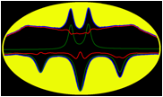
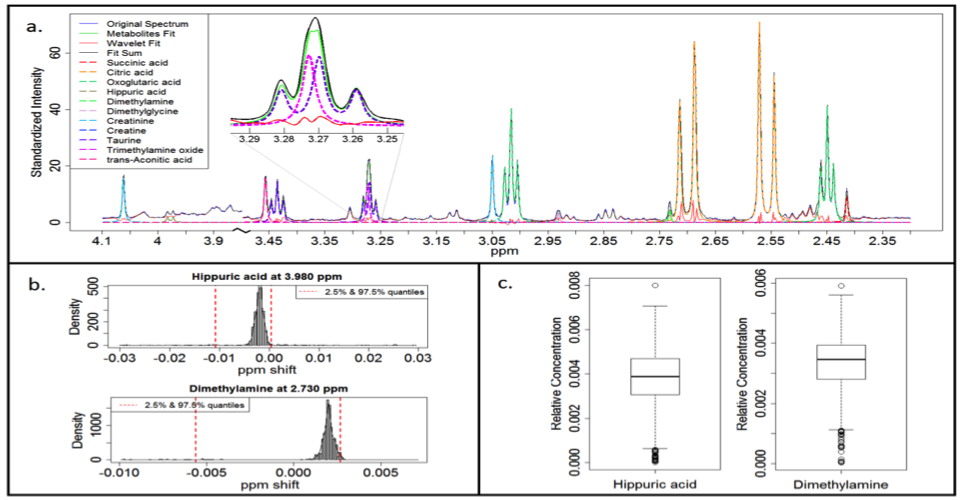

BATMAN: an R package for
the automated quantification of metabolites from NMR spectra using a Bayesian
Model
We present the Bayesian AuTomated Metabolite Analyser for NMR spectra (BATMAN), an R package for estimating
metabolite concentrations from Nuclear Magnetic Resonance spectral data using a
specialised MCMC algorithm.
It deconvolutes peaks from 1-dimensional NMR
spectra, automatically assigns them to specific metabolites from a target list
and obtains concentration estimates. The Bayesian model incorporates
information on characteristic peak patterns of metabolites and is able to
account for shifts in the position of peaks commonly seen in NMR spectra of
biological samples. It applies a Markov Chain Monte Carlo (MCMC) algorithm to
sample from a joint posterior distribution of the model parameters and obtains
concentration estimates with reduced error compared with conventional numerical
integration and comparable to manual deconvolution by
experienced spectroscopists.
The project summary page you can find here.
